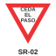
SR-02
CEDA EL PASO · p.66
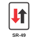
SR-49
PRIORIDAD AL SENTIDO CONTRARIO · p.66
SR-06
PROHIBIDO GIRAR A LA IZQUIERDA · p.69
SR-08
PROHIBIDO GIRAR A LA DERECHA · p.70
SR-10
PROHIBIDO GIRAR EN “U” · p.70
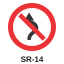
SR-14
PROHIBIDO CAMBIO DE CALZADA IZQUIERDA A DERECHA · p.70
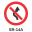
SR-14A
PROHIBIDO CAMBIO DE CALZADA DERECHA A IZQUIERDA · p.71
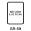
SR-50
PROHIBIDO GIRAR A LA DERECHA CON LUZ ROJA · p.72
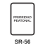
SR-56
ZONA PEATONAL (rotulada «Prioridad peatonal» en la Figura 2-13) · p.73
SR-16
PROHIBIDO CIRCULACIÓN DE VEHÍCULOS AUTOMOTORES · p.74
SR-18
PROHIBIDO CIRCULACIÓN DE VEHÍCULOS DE CARGA · p.74
SR-18A
PROHIBIDO CIRCULACIÓN DE VEHÍCULOS CON EJE ADICIONAL · p.78
SR-18B
PROHIBIDO CIRCULACIÓN DE VEHÍCULOS DESTINADOS AL TRANSPORTE DE MERCANCÍAS PELIGROSAS · p.78
SR-21
PROHIBIDA CIRCULACIÓN DE CABALGADURAS · p.75
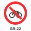
SR-22
PROHIBIDA CIRCULACIÓN DE BICICLETAS Y MOTOCICLOS · p.75
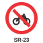
SR-23
PROHIBIDA CIRCULACIÓN DE MOTOCICLETAS · p.75
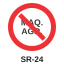
SR-24
PROHIBIDA CIRCULACIÓN DE MAQUINARIA AGRÍCOLA · p.76
SR-25
PROHIBIDA CIRCULACIÓN DE VEHÍCULOS DE TRACCIÓN ANIMAL · p.76
SR-51
PROHIBIDA CIRCULACIÓN DE CARROS DE MANO · p.76
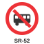
SR-52
PROHIBIDA CIRCULACIÓN DE BUSES · p.77
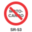
SR-53
PROHIBIDA CIRCULACIÓN DE MOTOCARROS · p.77
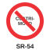
SR-54
PROHIBIDA CIRCULACIÓN DE CUATRIMOTOS · p.77
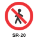
SR-20
PROHIBIDO CIRCULACIÓN DE PEATONES · p.78
SR-28
PROHIBIDO PARQUEAR · p.79
SR-28A
PROHIBIDO PARQUEAR O DETENERSE · p.79
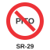
SR-29
PROHIBIDO PITAR · p.79
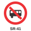
SR-41
PROHIBIDO EL ASCENSO Y DESCENSO DE PASAJEROS · p.80
SR-43
PROHIBIDO EL CARGUE Y DESCARGUE · p.80
SR-47
NO BLOQUEAR INTERSECCIÓN · p.81
SR-11
CIRCULACIÓN EN AMBOS SENTIDOS · p.81
SR-12
CIRCULACIÓN EN TRES CARRILES (UNO EN CONTRAFLUJO) · p.82
SR-13
CIRCULACIÓN EN TRES CARRILES (DOS EN CONTRAFLUJO) · p.82
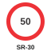
SR-30
VELOCIDAD MÁXIMA PERMITIDA · p.82
SR-30A
VELOCIDAD MÍNIMA PERMITIDA · p.84
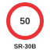
SR-30B
VELOCIDAD MÁXIMA PERMITIDA SALIDA · p.85
SR-31
PESO MÁXIMO BRUTO PERMITIDO · p.85
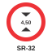
SR-32
ALTURA MÁXIMA PERMITIDA · p.86
SR-33
ANCHO MÁXIMO PERMITIDO · p.86
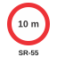
SR-55
LONGITUD MÁXIMA PERMITIDA · p.87
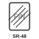
SR-48
FIN PROHIBICIÓN · p.87
SR-03
DIRECCIÓN OBLIGADA O SIGA DE FRENTE · p.88
SR-05
GIRO A LA IZQUIERDA SOLAMENTE · p.88
SR-07
GIRO A LA DERECHA SOLAMENTE · p.89
SR-09
GIRO EN “U” SOLAMENTE · p.89
SR-17
VEHÍCULOS PESADOS A LA DERECHA · p.89
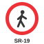
SR-19
PEATONES A LA IZQUIERDA · p.90
SR-35
CIRCULACIÓN CON LUCES BAJAS · p.90
SR-38
SENTIDO ÚNICO DE CIRCULACIÓN · p.91
SR-39
CIRCULACIÓN EN AMBOS SENTIDOS · p.91
SR-44
CONSERVAR ESPACIAMIENTO · p.92
SR-45
INDICACIÓN DE SEPARADOR DE TRÁNSITO A LA IZQUIERDA · p.92
SR-46
INDICACIÓN DE SEPARADOR DE TRÁNSITO A LA DERECHA · p.93
SR-58
CARRIL EXCLUSIVO · p.93
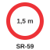
SR-59
DISTANCIA LATERAL DE SEGURIDAD CON CICLISTAS · p.94
SR-34
ZONA DE ESTACIONAMIENTO DE TAXI · p.94
SR-40
ZONA EXCLUSIVA DE PARADERO · p.95
SR-42
ZONA DE CARGUE Y DESCARGUE · p.95
SP-01
CURVA CERRADA A LA IZQUIERDA · p.109
SP-02
CURVA CERRADA A LA DERECHA · p.109
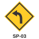
SP-03
CURVA PRONUNCIADA A LA IZQUIERDA · p.109
SP-04
CURVA PRONUNCIADA A LA DERECHA · p.110
SP-05
CURVA Y CONTRA-CURVA CERRADA PRIMERA A LA IZQUIERDA · p.110
SP-06
CURVA Y CONTRA-CURVA CERRADA PRIMERA A LA DERECHA · p.111
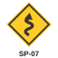
SP-07
ZONA DE CURVAS SUCESIVAS LA PRIMERA A LA IZQUIERDA · p.111
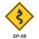
SP-08
ZONA DE CURVAS SUCESIVAS LA PRIMERA A LA DERECHA · p.112
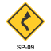
SP-09
CURVA Y CONTRA-CURVA PRONUNCIADA PRIMERA A LA IZQUIERDA · p.112
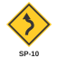
SP-10
CURVA Y CONTRA-CURVA PRONUNCIADA PRIMERA A LA DERECHA · p.113
SP-11
INTERSECCIÓN DE VÍAS · p.123
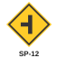
SP-12
VÍA LATERAL IZQUIERDA · p.123
SP-13
VÍA LATERAL DERECHA · p.123
SP-14
INTERSECCIÓN EN “T” · p.124
SP-15
BIFURCACIÓN EN “Y” · p.124
SP-16
BIFURCACIÓN A LA IZQUIERDA · p.124
SP-17
BIFURCACIÓN A LA DERECHA · p.125
SP-18
INTERSECCIÓN ESCALONADA PRIMERA IZQUIERDA · p.125
SP-19
INTERSECCIÓN ESCALONADA PRIMERA DERECHA · p.125
SP-21
INCORPORACIÓN DE TRÁNSITO DESDE LA IZQUIERDA · p.126
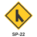
SP-22
INCORPORACIÓN DE TRÁNSITO DESDE LA DERECHA · p.126
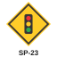
SP-23
PROXIMIDAD DE SEMÁFORO · p.130
SP-24
SUPERFICIE RIZADA · p.115
SP-25
PROXIMIDAD A RESALTO · p.116
SP-25A
UBICACIÓN DE RESALTO · p.116
SP-25B
PROXIMIDAD A REDUCTOR TRAPEZOIDAL/POMPEYANO · p.117
SP-25C
UBICACIÓN DE REDUCTOR TRAPEZOIDAL O POMPEYANO · p.117
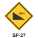
SP-27
PENDIENTE FUERTE DE DESCENSO · p.114
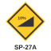
SP-27A
PENDIENTE FUERTE DE ASCENSO · p.115
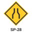
SP-28
REDUCCIÓN DE CALZADA A AMBOS LADOS · p.119
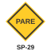
SP-29
PROXIMIDAD A SEÑAL DE “PARE” · p.130
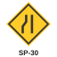
SP-30
REDUCCIÓN DE LA CALZADA A LA IZQUIERDA · p.119
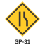
SP-31
REDUCCIÓN DE LA CALZADA A LA DERECHA · p.119
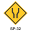
SP-32
ENSANCHAMIENTO SIMÉTRICO DE LA CALZADA · p.120
SP-33
PROXIMIDAD DE SEÑAL “CEDA EL PASO” · p.131
SP-34
ENSANCHAMIENTO DE LA CALZADA A LA IZQUIERDA · p.120
SP-35
ENSANCHAMIENTO DE LA CALZADA A LA DERECHA · p.120
SP-36
PUENTE ANGOSTO · p.121
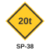
SP-38
PESO MÁXIMO BRUTO VEHICULAR PERMITIDO · p.121
SP-39
DOS SENTIDOS DE TRÁNSITO · p.131
SP-41
TRES CARRILES DE TRÁNSITO (UNO EN CONTRAFLUJO) · p.131
SP-42
ZONA DE DESPRENDIMIENTO DE ROCAS · p.141
SP-43
TRES CARRILES DE TRÁNSITO (DOS EN CONTRAFLUJO) · p.132
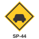
SP-44
SUPERFICIE DESLIZANTE · p.141
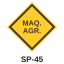
SP-45
MAQUINARIA AGRÍCOLA EN LA VÍA · p.132
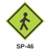
SP-46
ZONA DE PEATONES · p.133
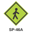
SP-46A
PROXIMIDAD DE CRUCE PEATONAL · p.133
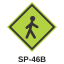
SP-46B
UBICACIÓN DE CRUCE PEATONAL · p.134
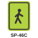
SP-46C
ZONA CON PRIORIDAD PEATONAL · p.134
SP-47
ZONA ESCOLAR · p.134
SP-47A
PROXIMIDAD A CRUCE ESCOLAR · p.135
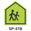
SP-47B
UBICACIÓN DE CRUCE ESCOLAR · p.136
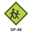
SP-48
NIÑOS JUGANDO · p.136
SP-49
PRESENCIA DE ANIMALES EN LA VÍA · p.137
SP-49A
CRUCE DE ANIMALES EN LA VÍA · p.137
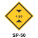
SP-50
ALTURA LIBRE · p.122
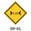
SP-51
ANCHO LIBRE · p.122
SP-52
CRUCE FERROVIARIO A NIVEL SIN BARRERA · p.127
SP-52A
CRUCE FERROVIARIO A NIVEL CON BARRERAS · p.127
SP-54
CRUZ DE SAN ANDRÉS · p.128
SP-55
INICIACIÓN DE SEPARADOR (DOS SENTIDOS) · p.138
SP-55A
INICIACIÓN DE SEPARADOR (UN SENTIDO) · p.138
SP-56
TERMINACIÓN DE VÍA CON SEPARADOR (DOS SENTIDOS) · p.138
SP-56A
TERMINACIÓN DE VÍA CON SEPARADOR (UN SENTIDO) · p.139
SP-57
FINAL DEL PAVIMENTO · p.118
SP-57A
CAMBIO DE TEXTURA EN SUPERFICIE DE RODADURA · p.118
SP-59
CICLISTAS EN LA VÍA · p.139
SP-59A
PROXIMIDAD A CRUCE DE CICLISTAS · p.139
SP-59B
UBICACIÓN DE CRUCE DE CICLISTAS · p.140
SP-67
RIESGO DE SINIESTRO · p.141
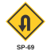
SP-69
CURVA MUY CERRADA A LA IZQUIERDA · p.113
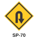
SP-70
CURVA MUY CERRADA A LA DERECHA · p.113
SP-71
PROYECCIÓN DE GRAVILLA · p.142
SP-72
SALIDA DE VEHÍCULOS DE BOMBEROS · p.142
SP-73
RÁFAGAS DE VIENTO LATERAL · p.142
SP-74
DESNIVEL SEVERO · p.143
SP-75
DELINEADOR DE CURVA HORIZONTAL · p.108
SP-76
LONGITUD MÁXIMA PERMITIDA · p.122
SP-77
ZONA DE NIEBLA · p.143
SP-78
PUENTE LEVADIZO · p.143
SP-79
VEHÍCULOS DE CARGA O EXTRA-DIMENSIONADOS · p.132
SP-80
TRICIMÓVILES EN LA VÍA · p.140
SP-81
CRUCE FERROVIARIO CON DESNIVEL DE RASANTES · p.128
SI-01
RUTA NACIONAL · p.175
SI-01A
RUTA DEPARTAMENTAL · p.175
SI-02
RUTA PANAMERICANA · p.175
SI-03
RUTA MARGINAL DE LA SELVA · p.175
SI-04
POSTES DE REFERENCIA · p.177
SI-05
SEÑALES DE DIRECCIÓN · p.171
SI-05A
SEÑALES DE DIRECCIÓN / SALIDA INMEDIATA · p.173
SI-05B
DESTINOS EN GLORIETA · p.157
SI-05C
RUTA ALTERNATIVA · p.170
SI-05D
SEÑALES DE PRESEÑALIZACIÓN · p.169
SI-06
SEÑALES DE CONFIRMACIÓN · p.174
SI-26
NOMBRE DE CALLES Y NOMENCLATURA URBANA · p.175
SI-07
SITIO DE PARQUEO · p.186
SI-07A
ZONAS ESPECIALES DE PARQUEO · p.186
SI-07B
ZONAS ESPECIALES DE PARQUEO DE BICICLETAS · p.187
SI-07C
ZONAS ESPECIALES DE PARQUEO DE VEHÍCULOS ELÉCTRICOS · p.187
SI-08
PARADERO DE BUSES · p.187
SI-09
ESTACIONAMIENTO DE TAXIS · p.187
SI-09A
ESTACIONAMIENTO DE TRICIMÓVILES · p.188
SI-10
SERVICIO DE TRANSBORDADOR · p.188
SI-11
VÍA PARA CICLISTAS · p.189
SI-11A
PRIORIDAD VÍA PARA CICLISTAS · p.189
SI-13
ZONA MILITAR · p.189
SI-16
PRIMEROS AUXILIOS · p.190
SI-17
SERVICIOS SANITARIOS · p.191
SI-22
ESTACIÓN DE SERVICIO · p.193
SI-22A
ESTACIÓN DE CARGA DE VEHÍCULOS ELÉCTRICOS · p.193
SI-23
MONTALLANTAS · p.193
SI-25
PASO O INSTALACIÓN ACCESIBLE · p.194
SI-25A
CRUCE DE PERSONAS CON Y/O EN SITUACIÓN DE DISCAPACIDAD VISUAL · p.194
SI-27
SEGURIDAD VIAL · p.194
SI-27A
SEGURIDAD VIAL EN INTERSECCIONES SEMAFORIZADAS · p.195
SI-27B
RADAR PEDAGÓGICO · p.195
SI-29
TRANSPORTE FERROVIARIO · p.195
SI-30
TRANSPORTE MASIVO · p.196
SI-30A
TRANSPORTE POR CABLE · p.196
SI-31
ZONA RECREATIVA · p.196
SI-32
TSUNAMI RUTA DE EVACUACIÓN · p.197
SI-33
ZONA DE RIESGO POR TSUNAMI · p.197
SI-34
PUNTO DE ENCUENTRO POR TSUNAMI · p.197
SI-35
SISTEMA PARA DETECCIÓN ELECTRÓNICA DE INFRACCIONES · p.198
SI-35A
ZONA DE CONTROL CON SISTEMA TECNOLÓGICO DE DETECCIÓN · p.199
ST-01
ZONA DE CAMPING · p.205
ST-06
PUNTO DE INFORMACIÓN TURÍSTICA · p.207
ST-08
BIENES ARQUEOLÓGICOS · p.207
ST-09
CUERPO DE AGUA · p.208
ST-10
POLIDEPORTIVO · p.208
ST-12
ALQUILER DE AUTOS · p.209
ST-12A
ALQUILER DE BICICLETAS O PATINETAS · p.209
ST-13
ATRACTIVO NATURAL · p.209
ST-19
ARRECIFE CORALINO · p.211
ST-23
PARQUE NACIONAL NATURAL · p.213
ST-24
OBSERVATORIO DE FLORA Y FAUNA · p.213
ST-25
SENDERO PARA EXCURSIONISTAS · p.213
ST-29
COMUNIDAD INDÍGENA · p.215
ST-30
MONUMENTO NACIONAL · p.215
ST-31
PATRIMONIO DE LA HUMANIDAD · p.215
ST-32
CENTRO HISTÓRICO · p.216
SPPO-01
CURVA CERRADA A LA IZQUIERDA · p.610
SPPO-02
CURVA CERRADA A LA DERECHA · p.610
SPPO-03
CURVA PRONUNCIADA A LA IZQUIERDA · p.610
SPPO-04
CURVA PRONUNCIADA A LA DERECHA · p.610
SPPO-05
CURVA Y CONTRA-CURVA CERRADA PRIMERA A LA IZQUIERDA · p.611
SPPO-06
CURVA Y CONTRA-CURVA CERRADA PRIMERA A LA DERECHA · p.611
SPPO-09
CURVA Y CONTRA-CURVA PRONUNCIADA PRIMERA A LA IZQUIERDA · p.611
SPPO-10
CURVA Y CONTRA-CURVA PRONUNCIADA PRIMERA A LA DERECHA · p.611
SPPO-11
INTERSECCIÓN DE VÍAS · p.611
SPPO-12
VÍA LATERAL IZQUIERDA · p.611
SPPO-13
VÍA LATERAL DERECHA · p.611
SPPO-14
INTERSECCIÓN EN “T” · p.611
SPPO-15
BIFURCACIÓN EN “Y” · p.611
SPPO-16
BIFURCACIÓN A LA IZQUIERDA · p.611
SPPO-17
BIFURCACIÓN A LA DERECHA · p.611
SPPO-21
INCORPORACIÓN DE TRÁNSITO DESDE LA IZQUIERDA · p.611
SPPO-22
INCORPORACIÓN DE TRÁNSITO DESDE LA DERECHA · p.611
SPPO-23
PROXIMIDAD DE SEMÁFORO · p.611
SPPO-24
SUPERFICIE RIZADA · p.611
SPPO-25
PROXIMIDAD A RESALTO · p.611
SPPO-25A
UBICACIÓN DE RESALTO · p.612
SPPO-25B
PROXIMIDAD A REDUCTOR TRAPEZOIDAL/POMPEYANO · p.612
SPPO-25C
UBICACIÓN DE REDUCTOR TRAPEZOIDAL O POMPEYANO · p.612
SPPO-27
PENDIENTE FUERTE DE DESCENSO · p.612
SPPO-27A
PENDIENTE FUERTE DE ASCENSO · p.612
SPPO-29
PROXIMIDAD A SEÑAL DE “PARE” · p.612
SPPO-32
ENSANCHAMIENTO SIMÉTRICO DE LA CALZADA · p.612
SPPO-33
PROXIMIDAD DE SEÑAL “CEDA EL PASO” · p.612
SPPO-34
ENSANCHAMIENTO DE LA CALZADA A LA IZQUIERDA · p.612
SPPO-35
ENSANCHAMIENTO DE LA CALZADA A LA DERECHA · p.612
SPPO-36
PUENTE ANGOSTO · p.612
SPPO-38
PESO MÁXIMO BRUTO VEHICULAR PERMITIDO · p.612
SPPO-39
DOS SENTIDOS DE TRÁNSITO · p.612
SPPO-41
TRES CARRILES DE TRÁNSITO (UNO EN CONTRAFLUJO) · p.612
SPPO-42
ZONA DE DESPRENDIMIENTO DE ROCAS · p.613
SPPO-43
TRES CARRILES DE TRÁNSITO (DOS EN CONTRAFLUJO) · p.613
SPPO-44
SUPERFICIE DESLIZANTE · p.613
SPPO-45
MAQUINARIA AGRÍCOLA EN LA VÍA · p.613
SPPO-46
ZONA DE PEATONES · p.613
SPPO-46A
PROXIMIDAD DE CRUCE PEATONAL · p.613
SPPO-46B
UBICACIÓN DE CRUCE PEATONAL · p.613
SPPO-46C
ZONA CON PRIORIDAD PEATONAL · p.613
SPPO-47
ZONA ESCOLAR · p.613
SPPO-47A
PROXIMIDAD A CRUCE ESCOLAR · p.613
SPPO-47B
UBICACIÓN DE CRUCE ESCOLAR · p.613
SPPO-50
ALTURA LIBRE · p.613
SPPO-51
ANCHO LIBRE · p.613
SPPO-52
CRUCE FERROVIARIO A NIVEL SIN BARRERA · p.613
SPPO-52A
CRUCE FERROVIARIO A NIVEL CON BARRERAS · p.613
SPPO-55
INICIACIÓN DE SEPARADOR (DOS SENTIDOS) · p.614
SPPO-55A
INICIACIÓN DE SEPARADOR (UN SENTIDO) · p.614
SPPO-56
TERMINACIÓN DE VÍA CON SEPARADOR (DOS SENTIDOS) · p.614
SPPO-56A
TERMINACIÓN DE VÍA CON SEPARADOR (UN SENTIDO) · p.614
SPPO-57
FINAL DEL PAVIMENTO · p.614
SPPO-57A
CAMBIO DE TEXTURA EN SUPERFICIE DE RODADURA · p.614
SPPO-59
CICLISTAS EN LA VÍA · p.614
SPPO-59A
PROXIMIDAD A CRUCE DE CICLISTAS · p.614
SPPO-59B
UBICACIÓN DE CRUCE DE CICLISTAS · p.614
SPPO-67
RIESGO DE SINIESTRO · p.614
SPPO-69
CURVA MUY CERRADA A LA IZQUIERDA · p.614
SPPO-70
CURVA MUY CERRADA A LA DERECHA · p.614
SPPO-71
PROYECCIÓN DE GRAVILLA · p.614
SPPO-74
DESNIVEL SEVERO · p.614
SPPO-75
DELINEADOR DE CURVA HORIZONTAL · p.614
SPPO-76
LONGITUD MÁXIMA PERMITIDA · p.614
SIO-02
INICIO DE OBRA · p.626
SIO-03
FIN DE OBRA · p.627
SIO-05
DESVÍO A XXX m · p.627
SIO-08
FIN DE DESVÍO · p.628
SIO-09
FINAL O CIERRE DE CARRIL DERECHO EN UNA CALZADA UNIDIRECCIONAL DE DOS CARRILES · p.629
SIO-10
FINAL O CIERRE DE CARRIL DERECHO EN UNA CALZADA UNIDIRECCIONAL DE TRES CARRILES · p.629
SIO-11
FINAL O CIERRE DE CARRIL IZQUIERDO EN UNA CALZADA UNIDIRECCIONAL DE DOS CARRILES · p.629
SIO-12
FINAL O CIERRE DE CARRIL IZQUIERDO EN UNA CALZADA UNIDIRECCIONAL DE TRES CARRILES · p.630
SIO-13
GENERACIÓN DE CARRIL DERECHO EN UNA CALZADA UNIDIRECCIONAL DE UN CARRIL · p.630
SIO-14
GENERACIÓN DE CARRIL DERECHO EN UNA CALZADA UNIDIRECCIONAL DE DOS CARRILES · p.630
SIO-15
GENERACIÓN DE CARRIL IZQUIERDO EN UNA CALZADA UNIDIRECCIONAL DE UN CARRIL · p.631
SIO-16
GENERACIÓN DE CARRIL IZQUIERDO EN UNA CALZADA UNIDIRECCIONAL DE DOS CARRILES · p.631
SIO-17
CAMBIO DE ALINEAMIENTO AL LADO DERECHO EN UNA CALZADA UNIDIRECCIONAL DE DOS CARRILES · p.631
SIO-18
CAMBIO DE ALINEAMIENTO AL LADO DERECHO EN UNA CALZADA UNIDIRECCIONAL DE TRES CARRILES · p.632
SIO-19
CAMBIO DE ALINEAMIENTO AL LADO IZQUIERDO EN UNA CALZADA UNIDIRECCIONAL DE DOS CARRILES · p.632
SIO-20
CAMBIO DE ALINEAMIENTO AL LADO IZQUIERDO EN UNA CALZADA UNIDIRECCIONAL DE TRES CARRILES · p.632
SIO-21
CAMBIO DE ALINEAMIENTO AL LADO DERECHO EN UNA CALZADA BIDIRECCIONAL DE DOS CARRILES · p.633
SIO-22
CAMBIO DE ALINEAMIENTO AL LADO IZQUIERDO EN UNA CALZADA BIDIRECCIONAL DE DOS CARRILES · p.633
SIO-23
PARADERO TEMPORAL DE BUSES · p.633
SIO-24
SENDERO PEATONAL · p.634
SIO-25
SEMÁFORO APAGADO · p.634
SIO-26
CRUCE PEATONAL NO HABILITADO · p.634
SIO-27
SEÑAL RELACIONADA CON SITUACIONES DE OBRA · p.635